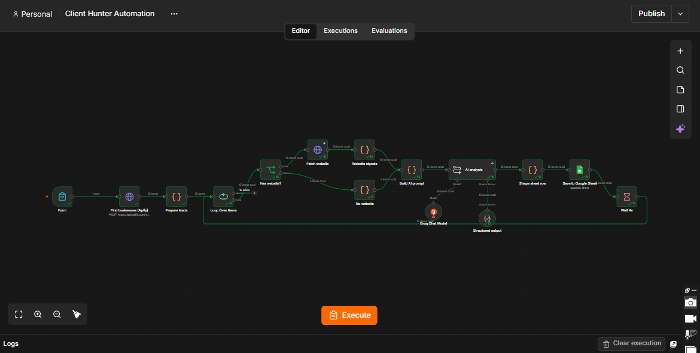
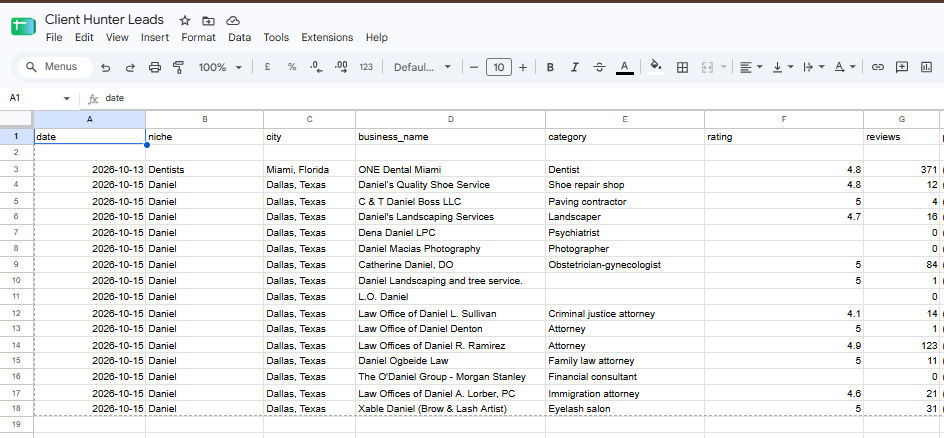

Projects / Client Hunter Automation
Sales · Lead generation
Client Hunter Automation
Enter a niche and a city, and the workflow finds local businesses, checks their websites and saves AI-scored leads to Google Sheets.
The problem
Finding new clients by hand means searching maps, opening websites one by one and copying details into a sheet. It takes hours, and the notes are never consistent.
The solution
A form takes a niche and a city. Apify finds matching businesses, the workflow checks whether each one has a website, and an AI model analyses what it finds and writes a short lead summary. Each result is added as a row in Google Sheets.
How it works
- Enter the niche and city. A simple n8n form starts the run, for example dentists in Miami.
- Find businesses. An Apify request returns local businesses with category, rating and review count.
- Check each website. The workflow loops through the businesses. Those with a website are fetched and scanned for signals; those without one are marked as having no website.
- Analyse with AI. A prompt is built from the business data and website signals. A Groq model returns structured output.
- Save the lead. The result is shaped into a row and appended to Google Sheets. A 4-second wait between businesses keeps the run stable.
See it working


What the screenshots show
- The 15-node workflow with its website / no website branch.
- The Client Hunter Leads sheet with date, niche, city, business name, category, rating and review count.
A good fit for
- Marketing and web design freelancers
- Agencies that sell to local businesses
- Sales teams building prospect lists
Want something like this for your business?
Tell me what slows your team down. I will tell you whether it can be automated and how it would work.